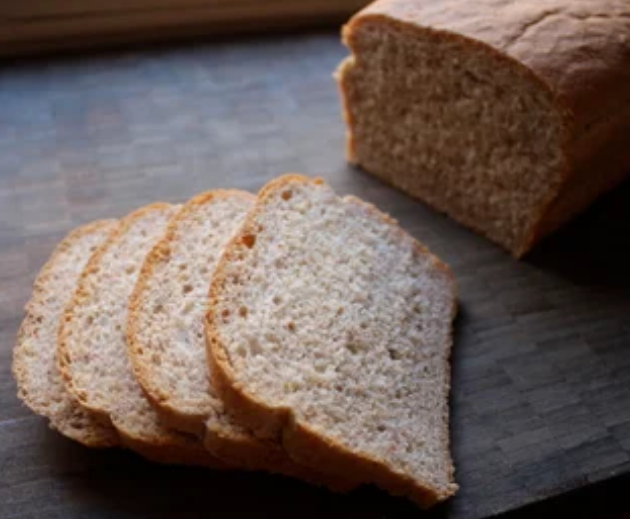
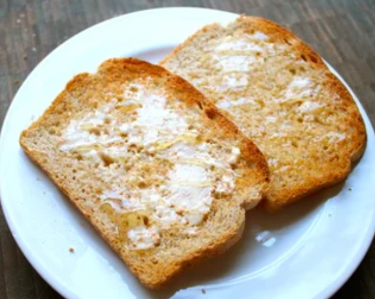

Bread is a starchy food made from flour, water, and yeast mixed together and baked in an oven.
I like bread because it takes hours to digest
- 1 cup of warm water
- 1 tablespoon oil
- 1 tablespoon of honey or white sugar
- 1 tablespoon of salt
- 2 teaspoons of yeast
- 1 cup of whole wheat flour
- 1 cup off all purpose flour + additional for kneading in/dusting
- find the ingredients
😎
- feed the yeast
- add the regular flour
- knead the flour
😏
- leave it to rise first time
- punch it down
- leave it to rise for the second time + preheating
- bake the flour
- leave it to cool down
- store it , and it ready for eating
🤯
FOR MORE INFORMATION VISIT THE WEBSITES BELOW
https://www.tutorialrepublic.com/css-reference/css3-properties.php